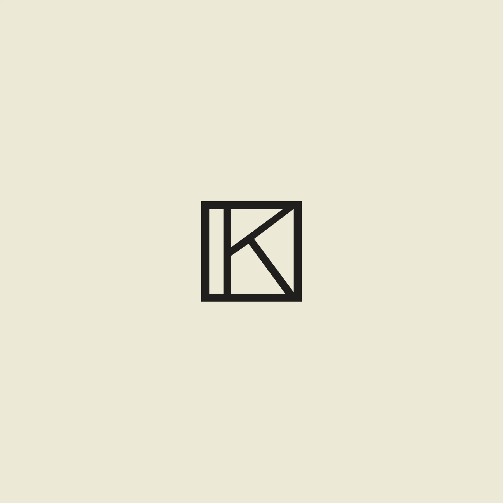

Zu den Werken
← Drei Konzepte
02
Dunkles Museum
06
Nachtausstellung
08
Filmisch
×
Konzepte vergleichen

KRYSTYNA
MISHCHENKO
☼
Hell
Sprache
English
Deutsch
Українська
Polski
Русский
Menü
+
Werke
Über mich
Ausstellungen & CV
Kontakt
Aktivieren Sie JavaScript, um die interaktive Galerie zu sehen.
CV herunterladen
Schließen ×
←
→